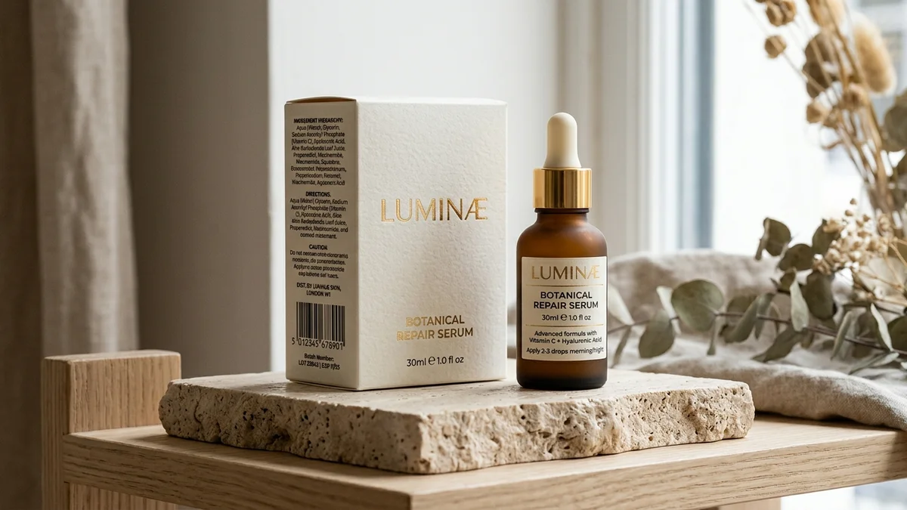

Desain packaging skincare yang efektif memadukan identitas brand, kemasan fungsional, label sesuai regulasi, dan tampilan visual yang konsisten sehingga produk mudah dikenali dan dipercaya pembeli.
- Kemasan adalah titik temu antara keindahan estetika, perlindungan formula sediaan, dan kepatuhan informasi label.
- Sejak 17 Oktober 2026, kosmetik wajib bersertifikat halal sehingga logo halal resmi wajib dialokasikan pada tata letak label.
- Pilih jenis kemasan primer berdasarkan sifat dan viskositas formula, bukan semata-mata tampilan bentuk luar.
- Lakukan pembuatan mockup 3D dan uji kompatibilitas wadah dengan formula sediaan sebelum masuk tahap cetak massal.
- Komponen biaya kemasan dan finishing cetak wajib dimasukkan ke dalam kalkulasi HPP sejak awal perancangan.
Mengapa Desain Packaging Skincare Menentukan Keputusan Beli?
Desain packaging skincare menentukan keputusan beli karena kemasan adalah hal pertama yang dilihat konsumen dan sering dianggap cerminan kualitas isi produk di dalamnya.
Sebagian besar konsumen berbelanja skincare di marketplace dan media sosial hanya dengan mengamati tampilan foto visual di layar ponsel.
Dalam kondisi tersebut, desain kemasan menjadi pembeda utama yang memikat minat sebelum calon pembeli sempat membaca ulasan testimoni orang lain.
Kemasan yang rapi, bersih, mudah dibaca susunan informasinya, dan memiliki warna harmonis secara psikologis membangun persepsi brand yang profesional.
Namun, daya tarik visual saja tentu tidak mencukupi bila mengabaikan aturan hukum yang berlaku di Indonesia.
Kosmetik masuk kelompok produk yang wajib bersertifikat halal setelah masa penahapan berakhir pada 17 Oktober 2026 mendatang.
Data BPJPH mencatat 81.343 produk kosmetik dalam negeri telah mengantongi sertifikat halal resmi per Mei 2025.
Artinya, konsumen tanah air semakin terbiasa melihat logo halal resmi, sehingga brand baru wajib menyediakan ruang layout yang proporsional sejak awal perancangan grafis.
Desain packaging yang unggul memadukan tiga pilar serasi: daya tarik visual yang elegan, fungsi pelindung sediaan kimiawi, serta kelengkapan data legalitas resmi.
Elemen Apa Saja yang Membentuk Desain Kemasan Skincare yang Menarik?
Desain kemasan skincare yang menarik dibentuk oleh logo, palet warna, tipografi, tata letak proporsional, ilustrasi pendukung, dan pemilihan teknik finishing cetak yang selaras.
Logo dan nama produk
Logo brand harus dirancang agar tetap terbaca jelas saat dicetak dalam bidang sempit, misalnya pada label melingkar botol kaca 30 ml.
Ujilah logo dalam format warna penuh maupun monokrom hitam putih agar fleksibel diaplikasikan pada beragam latar material wadah kosmetik.
Palet warna
Pilihlah dua sampai tiga warna acuan utama brand. Warna lembut dan pastel netral umumnya memancarkan kesan bersih, mewah, dan menenangkan.
Sedangkan palet warna solid yang kontras menonjolkan karakter modern dan energik. Terapkan palet ini secara konsisten pada seluruh seri produk Anda.
Tipografi dan hierarki informasi
Batasi jenis rupa huruf maksimal dua ragam jenis font. Susun hierarki visual yang runut: nama merek, nama varian produk, manfaat pokok, lalu detail bahan aktif.
Ukuran huruf wajib dijaga agar tetap nyaman dibaca oleh mata konsumen di bawah pencahayaan ruangan normal tanpa perlu alat bantu pembesar.
Finishing cetak
Teknik finishing seperti laminasi doff (matte), kilap (glossy), hot print foil emas, atau emboss memberikan sensasi taktil yang premium saat disentuh.
Namun, setiap penambahan finishing akan menambah beban biaya cetak per unit, sehingga pilihlah variasi finishing yang seimbang dengan target harga jual produk Anda.
Bagaimana Memilih Jenis Kemasan Skincare yang Tepat?
Jenis kemasan skincare dipilih berdasarkan tekstur formula, kestabilan bahan aktif, kenyamanan pemakaian, dan anggaran, misalnya botol pump untuk lotion dan dropper untuk serum.
Kemasan primer adalah wadah yang bersentuhan langsung dengan zat kosmetik. Sedangkan kemasan sekunder adalah kotak dus kardus luar sebagai pelindung ekstra.

- Botol pump: Sangat praktis dan higienis untuk cairan pembersih wajah (facial wash), pelembap lotion cair, dan sabun mandi cair.
- Botol dropper (pipet): Format standar untuk sediaan serum dan minyak wajah konsentrat karena dosis tetesan sangat mudah ditakar.
- Jar (pot bulat): Memberikan sensasi mewah untuk krim bertekstur kental, namun memerlukan spatula kecil agar formula tidak tercemar bakteri jari tangan.
- Tube fleksibel: Wadah yang sangat higienis, ringan, serta tahan benturan saat pengiriman, ideal untuk sediaan gel dan krim tabir surya.
- Airless pump: Sistem pompa vakum kedap udara yang efektif memproteksi zat aktif mudah teroksidasi, meski investasinya membutuhkan biaya lebih tinggi.
Karakteristik material wadah seperti kaca bening, PET, HDPE, atau botol PP memiliki sifat kimia berbeda dalam hal kerapatan gas dan ketahanan terhadap pelarut formula.
Diskusikan bersama formulator pabrik untuk memastikan material kemasan tidak meluruh atau bereaksi dengan asam formula sediaan.
Langkah ini berkaitan langsung dengan uji stabilitas dan QC skincare di laboratorium, karena interaksi wadah dapat mempengaruhi kualitas produk selama masa penyimpanan.
Informasi Apa yang Perlu Ada pada Label Kemasan Skincare?
Label kemasan skincare umumnya memuat nama produk, kegunaan, cara pakai, komposisi, isi bersih, nomor batch, tanggal kedaluwarsa, produsen, nomor notifikasi, dan logo halal.
Berikut ketentuan penting penulisan label yang wajib dipenuhi setiap pemilik brand:
- Nama produk dan kegunaan: Tuliskan nama merek dan fungsi sediaan secara jujur tanpa membuat klaim hiperbolis yang menyerupai obat resep.
- Petunjuk pemakaian dan peringatan: Jelaskan urutan pemakaian serta instruksi khusus bagi tipe kulit tertentu secara gamblang.
- Daftar komposisi bahan (INCI): Cantumkan seluruh zat bahan baku secara lengkap berurutan dari konsentrasi terbesar sesuai standar baku.
- Isi bersih (netto): Tuliskan besaran bobot gram atau volume mililiter dengan simbol satuan baku internasional yang benar.
- Nomor batch produksi dan kedaluwarsa: Informasi wajib untuk melacak riwayat batch produksi saat menerima pertanyaan dari konsumen.
- Nama produsen atau pemilik notifikasi: Identitas pabrik penerima maklon atau badan usaha pemilik merek yang sah.
- Nomor notifikasi BPOM dan logo halal: Wajib dicetak jelas pada kemasan luar maupun wadah primer sesuai pedoman desain instansi terkait.
Peraturan teknis penandaan label kosmetik dapat diperbarui secara berkala oleh BPOM, sehingga naskah label wajib direview bersama tim legal pabrik sebelum naik cetak.
Bagaimana Tahapan Mendesain Kemasan Skincare dari Brief hingga Cetak?
Tahapan mendesain kemasan skincare meliputi penyusunan brief, riset visual, pembuatan konsep, mockup, uji kompatibilitas, revisi, dan persiapan file cetak bersama vendor.
- Penyusunan creative brief: Tuliskan karakteristik target konsumen, identitas visual brand, dimensi botol, dan batas anggaran biaya per kemasan.
- Riset visual kompetitor: Kumpulkan studi referensi visual di pasar, lalu cari sudut pembeda agar botol Anda tampak kontras di etalase toko.
- Pembuatan rancangan konsep: Rancang dua hingga tiga variasi tata letak yang memadukan logo, perpaduan warna, dan tata huruf.
- Pembuatan mockup 3 dimensi: Visualisasikan tata letak pada botol dan kotak dus untuk menilai keterbacaan teks informasi dari berbagai sudut pandang.
- Uji kompatibilitas wadah: Masukkan sampel formula ke dalam wadah kemasan contoh, lalu amati adanya risiko kebocoran, rembesan minyak, atau deformasi botol.
- Pemeriksaan final teks legalitas: Pastikan ejaan daftar komposisi, nomor registrasi BPOM, serta logo halal telah divalidasi oleh apoteker pabrik maklon.
- Persiapan file cetak siap produksi: Konversi dokumen grafis ke mode warna CMYK beresolusi tinggi, lalu mintalah contoh cetak fisik (print proof) sebelum produksi massal.
Setiap penentuan jenis botol, kardus, dan stiker label berpengaruh langsung terhadap Harga Pokok Penjualan, seperti yang dijelaskan dalam artikel cara menghitung HPP skincare.
Apa Saja Kesalahan Umum dalam Desain Kemasan Skincare?
Kesalahan umum desain kemasan skincare adalah teks terlalu kecil, klaim berlebihan, warna tidak konsisten, kemasan tidak cocok dengan formula, dan biaya kemasan melebihi anggaran.
Beberapa kasus nyata yang kerap dialami oleh perintis brand pemula antara lain:
- Memilih model botol yang sangat estetik di media sosial namun ternyata tutup ulirnya mudah merembes bocor saat dikirim via ekspedisi.
- Menyisakan porsi ruang label yang terlalu sempit sehingga tulisan komposisi dan tata cara pemakaian menjadi buram sulit dibaca.
- Mencetak ribuan lembar dus kotak luar sebelum nomor notifikasi BPOM dan status sertifikasi halal diterbitkan secara definitif.
- Memakai acuan warna digital layar gawai yang menghasilkan warna jauh berbeda pada media karton fisik karena tidak meminta sampel cetak proofing.
- Memesan botol custom impor dalam jumlah masif padahal tingkat penyerapan pasar atas sediaan tersebut belum divalidasi secara nyata.
Langkah pencegahan terbaik adalah memesan contoh sampel kemasan dalam skala kecil terlebih dahulu dan menguji seluruh aspek fisik sebelum mencetak massal.
Kesimpulan Praktis: Kunci Kemasan Skincare yang Menjual
Kemasan skincare yang menjual adalah kemasan yang cantik, fungsional melindungi isi sediaan, patuh regulasi BPOM dan Halal, serta terhitung secara presisi dalam anggaran HPP.
Poin utama yang harus selalu Anda ingat: tetapkan identitas visual yang konsisten, tentukan jenis wadah sesuai karakteristik cairan sediaan, sediakan ruang informasi wajib, dan selalu lakukan uji fisik sampel sebelum produksi massal.
Untuk memahami gambaran utuh bagaimana kemasan menyatu dalam tahapan bisnis secara menyeluruh, Anda dapat membaca panduan lengkap cara memulai bisnis skincare dari ide hingga produk.
Siapkan Kemasan Produk Anda Bersama Kami
Butuh bantuan menyiapkan wadah botol, desain grafis, dan label resmi untuk lini skincare Anda? Diskusikan kebutuhan kemasan, ukuran, dan rancangan label bersama tim kami melalui konsultasi maklon skincare agar desain Anda siap masuk jalur produksi secara efisien.